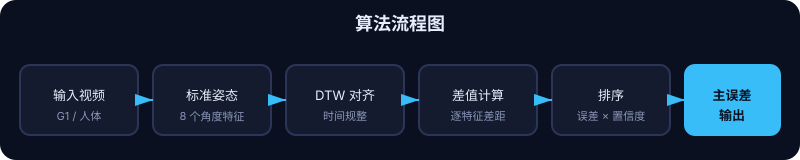

误差检测算法说明
我们将人体动作尝试与机器人参考动作对比，找出最重要的差异，驱动「镜面/反馈」闭环。
流程
- 标准姿态提取 — G1 参考和人体都被归约成 8 个可解释的角度特征（手臂抬高 / 方位、肘部弯曲、躯干偏航 / 倾斜）。
- 时序对齐 —
DTWAligner使用 Dynamic Time Warping（动态时间规整），让时间漂移不会破坏对比。 - 差值引擎 — 对每个已对齐的帧对，计算每个特征的带符号误差；对循环角度采用最短路径环绕（例如 359° 与 1° 的差值为 2°）。
- 排序 —
ErrorRanker按「误差大小 × 重要度 × 置信度」为每个特征打分，挑选出最值得展示的唯一关键误差。 - 输出 — 返回主误差、排序列表、时间滞后，供可视化报告使用。
标准特征
- left_arm_elevation / right_arm_elevation
- left_arm_azimuth / right_arm_azimuth
- left_elbow_flexion / right_elbow_flexion
- torso_yaw / torso_lean
关键技巧
- 范围归一化的 DTW 代价，让所有特征公平贡献
- 角度的循环环绕
- 置信度 = 显著性 × 一致性，衡量整段动作的可靠程度
流程图

打开可视化报告
查看 DTW 对齐、排序误差和已保存 JSON 报告的主误差。
实时对标教练
用摄像头和参考视频实时运行相同的对比逻辑。
阅读 PRD
产品需求、用户场景和完整的 Mirror 闭环。